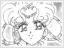

Entity » The Extras» Counterparts of Venus Throughout the five seasons of the BSSM saga, almost every season has a villain that was a counterpart to each senshi. The villain counterparts of Sailor Venus are briefly described below. Kunzite was the last of the 4 generals in Sailor Moon, the first season. His mission is like all of the other 3 generals, to fetch the Emperium Silver Crystal. But his real mission is to kill Sailor Moon(cuz he thinks she's reasponsible for Zoisite's death) and get revenge for Zoisite. Kunzite was killed by Sailor Moon's Crystal. (I guess he and Zoisite can finally be together now, though not in peace.) Calaveras was the second oldest of the four sisters of the Black Moon. Her attacks were done with her whips. She is the counterpart of Sailor Venus in SMR and her whips were an equal match to Sailor Venus's Love Me Chain attack. Rubeus gave them a powerful ward so she and Petz could get their sisters back after they were healed by Sailor Moon. Calaveras was later betrayed by Petz because Petz wanted all the power and didn't want to share. She was also healed later by Sailor Moon. Mimete is the second to appear of the Witches 5 and the youngest. She is the counterpart of Sailor Venus in SMS. She is boy crazy and flirts constantly. She falls in love with all the males with heart crystals. Her disguise is a bird watcher. She was killed by Tellu when she stepped into a machine created by Eudial to make the witches much more powerful then before. However, Tellu unplugged the machine and she was killed. Mimete's attack is Charm Buster. Mimete is from the Tau star system. She and Eudial hated each other, and since she knew Eudial hated and feared snails, she put them all over her locker with notes to have a good laugh. Cere Cere is often called magician of flowers. She loves to wear pretty clothes and sort of stuck up. In the Dead Moon Circus she is the trapeze artist. She uses flower petals and the trapeze to hypnotize others. She is usually calm and doesn't quarrel with the others. She can be stubborn at times and always gets what she wants. Only Sailor Jupiter and Sailor Venus can destroy the plants she creates to get the Dream Mirrors. She is the leader of the Amazoness Quartet and counterpart of Sailor Venus in SuperS. Note: There isn't a definite counterpart of Sailor Venus in the Sailor Stars. Many can argue that her counterpart could be either Iron Mouse or Tin Nyanko. |